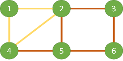

欧拉回路
今天讨论的主题是一类问题，就是欧拉路问题。有两种欧拉路。第一种叫做 Eulerian path(trail)，沿着这条路径走能够走遍图中每一条边；第二种叫做 Eularian cycle，沿着这条路径走，不仅能走遍图中每一条边，而且起点和终点都是同一个顶点。注意：欧拉路要求每条边只能走一次，但是对顶点经过的次数没有限制。
满足什么性质的图才能有欧拉路？根据 wikipedia 对欧拉路的介绍：
- 在无向图中，所有顶点的度数均为偶，则存在 Eularian cycle；若有且仅有两个顶点的度数为奇，其余的都为偶，则存在 Eularian path；
- 在有向图中，所有顶点的入度数等于出度数，则存在 Eularian cycle；若有且仅有两个顶点：其中一个入度数比出度数大 1，另一个入度数比出度数小 1，其余的顶点入度数等于出度数，则存在 Eularian path.
另外我们还需要知道，对于那些 Eularian path，起点和终点分别在那两个度数为奇的顶点上（对于无向图）或是入度数不等于出度数的顶点上（对于有向图）。
然而知道这些并没有给我们带来多少实惠。因为我们除了判定一个图有没有欧拉路之外，更想找到其中的一条欧拉路径。于是这就是我们今天的重点：寻找欧拉路径的算法。
一个比较经典的算法是 Fleury 算法。Fleury 算法的思想就是：在过河拆桥之前，先想想有没有退路。为什么这么说？Fleury 算法每个回合进行到一个顶点上的时候，都会删除已经走过的边。在选择下一条边的时候，不应该出现这样的状况：在删除下一条边之后，连通图被分割成两个不连通的图。除非没有别的边可选择。该算法从一个奇度数顶点开始（若所有顶点度数均为奇，则任选一个顶点）。当所有的边都走完的时候，该算法结束，欧拉路径为删除路径的顺序。用算法伪代码描述就是：
|
|
但是该算法的问题就是，怎么判断一条边是否是一个桥呢？如果使用 Tarjan 算法判断，则算法运行时间就是 $O(E^2)$。在实际写代码的时候，我可没考虑那么多。我只考虑，如果在某一点处深搜的结果导致图被分离，那么在某一个边必然走过了一个桥，那么就返回走另一条边。这样的思想形成的算法如下：
粗略分析一下，由于算法要经过每条边，所以时间必然是$\Omega(E)$。在最坏情况下，在每个节点处进行一次 DFS，节点会重复走所以以边计算，所以算法复杂度应该是 $O(E(E+V))$。
另一种计算欧拉路的算法是 Hierholzer 算法。这种算法是基于这样的观察：

在手动寻找欧拉路的时候，我们从点 4 开始，一笔划到达了点 5，形成路径 4-5-2-3-6-5。此时我们把这条路径去掉，则剩下三条边，2-4-1-2 可以一笔画出。
这两条路径在点 2 有交接处（其实点 4 也是一样的）。那么我们可以在一笔画出红色轨迹到达点 2 的时候，一笔画出黄色轨迹，再回到点 2，把剩下的红色轨迹画完。
由于明显的出栈入栈过程，这个算法可以用 DFS 来描述。
|
|
如果想看得更仔细一点，下面是从点 4 开始到点 5 结束的 DFS 过程，其中 + 代表入栈，- 代表出栈。
4+ 5+ 2+ 3+ 6+ 5+ 5- 6- 3- 1+ 4+ 2+ 2- 4- 1- 2- 5- 4-
我们把所有出栈的记录连接起来，得到
5-6-3-2-4-1-2-5-4
诸位看官可以自己再选一条路径尝试一下。不过需要注意的是，起始点的选择和 Fleury 要求的一样。
这个算法明显要比 Fleury 高效，它不用判断每条边是否是一个桥。我写的代码如下：
需要注意的是这个算法时间复杂度是 $O(E)$。其在 DFS 的过程中不用恢复边，靠出栈记录轨迹。
Fin
（本文大量论述受到 hihocoder week 49, 50 和 51 启发。代码所解决的题目为 http://hihocoder.com/contest/hiho50/problem/1）